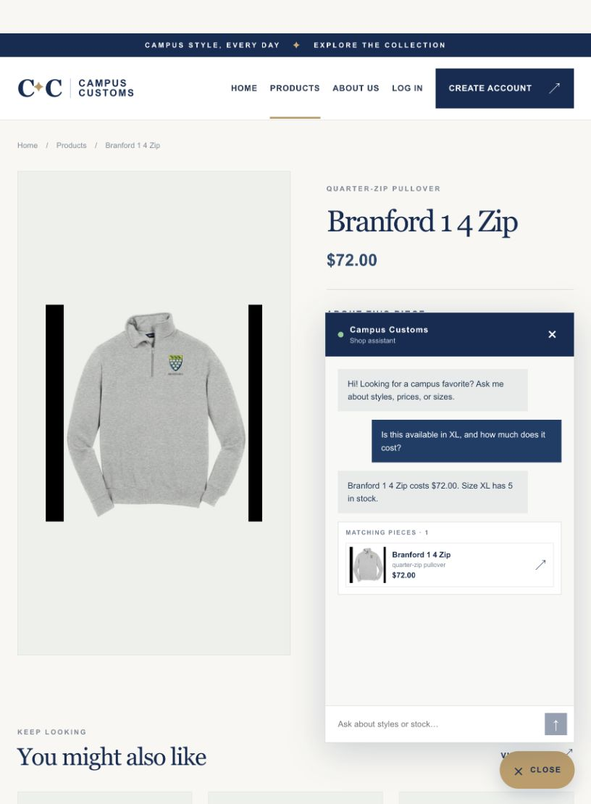
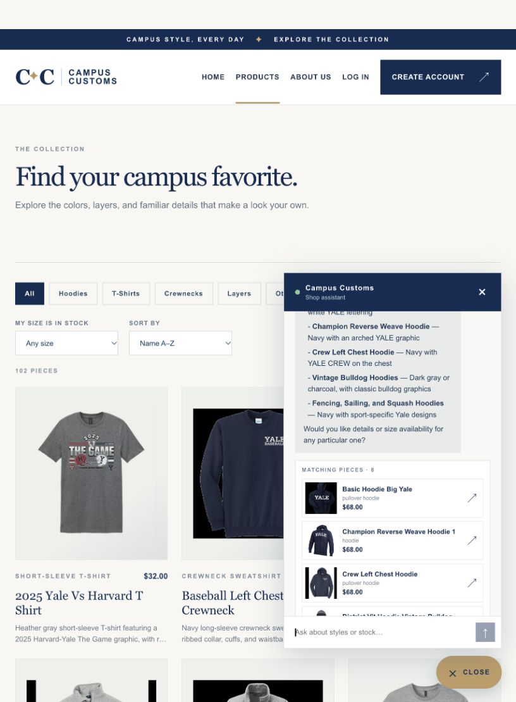
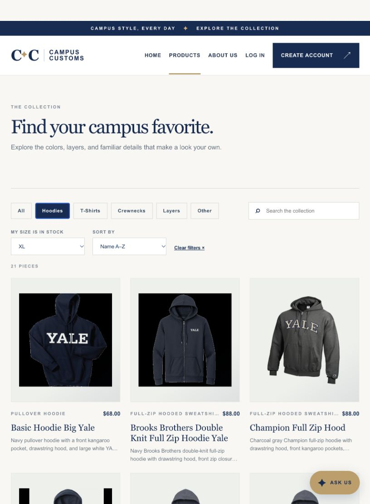

On the Branford 1 4 Zip page, the shopper asked whether XL was available and what it cost. The assistant replied with the database-backed $72.00 price and five XL units, then linked the matching product.

After “What hoodies do you have?”, the chat returned eight real catalogue matches. The screenshot shows the response and the first three clickable image cards; the list scrolls to the remaining cards.

The Products page is set to Hoodies and XL. It shows 21 pieces whose XL inventory is greater than zero, with a clear-filters control to restore the full catalogue.